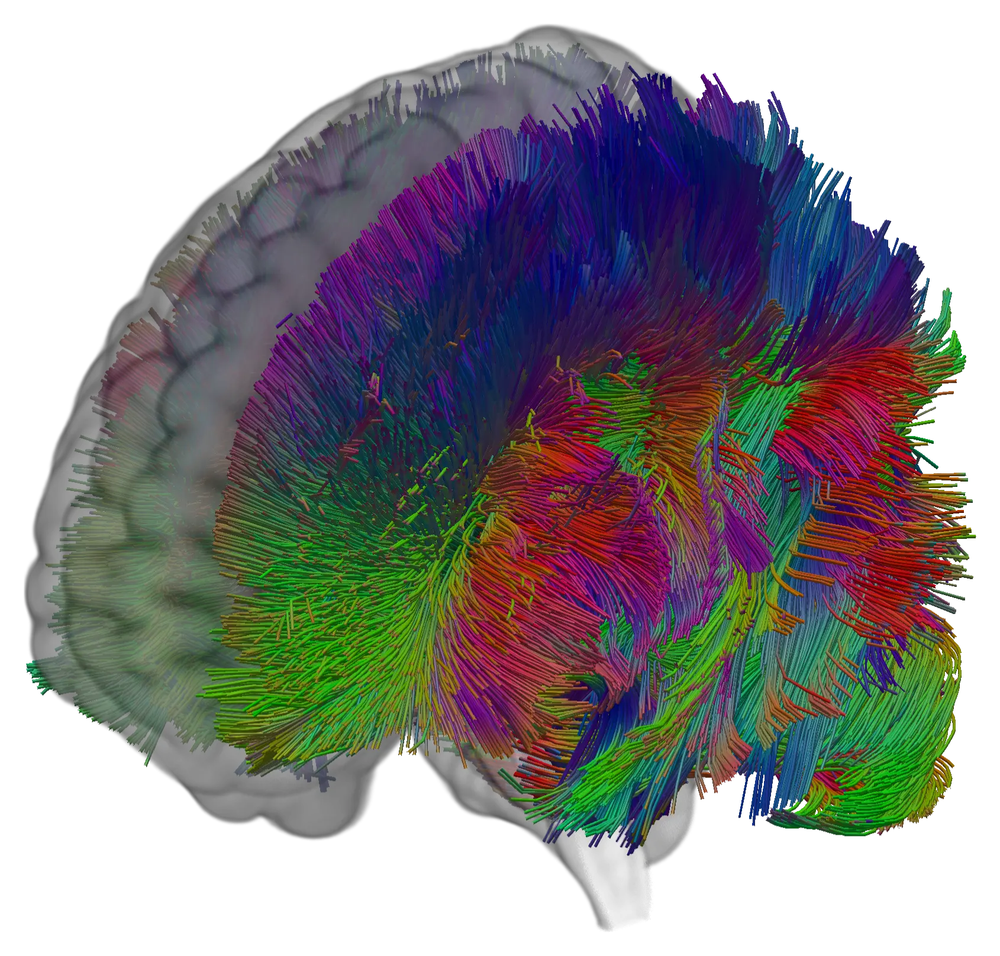

Visual
Neuroscience
Human Brain Anatomy:
Interactive 3D Brain Atlas
iOS and web

Human Brain Anatomy:
Interactive 3D Brain Atlas
iOS and web

The sharing card, at its true size of 1200 × 630 — the ratio link previews crop to. The picture is the tractogram of the iOS store image, Wiring System Tractogram, in the same state without the app’s bars and on a clear ground, standing on the backdrop itself; the words are the title and the heading line of the first store image, in the store images’ own type, ink and backdrop, with where it runs beneath; and the brain mark stands at the foot’s right. app/scripts/shoot-social-card.js renders the tractogram to assets/social/tractogram.webp and the card to assets/social-card.jpg, which every page points at for og:image.